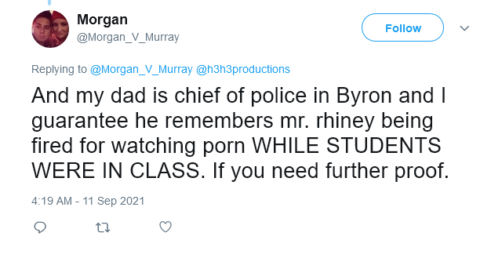

Please do not harass any of the names I mention on my website!
Morgan posted this screenshot showing proof that her father remembers Charley being fired for watching porn.

image source: https://web.archive.org/web/20210911134543/https://twitter.com/Morgan_V_Murray/status/1436686999700836361
Morgan's father is the chief police of Byron.
image source: https://web.archive.org/web/20210911112039/https://twitter.com/Morgan_V_Murray/status/1436650708204457986
Ethan's fans searched up "Who is the chief police of Byron, Illinois?" Aka Todd Murray. That's how they stalked and harassed Morgan's entire friends and family. Morgan set her profile to private, and was effectively silenced, because she was too afraid to speak.
The hackers impersonated Morgan, told the phone company "Hi, my name is Morgan. I want to transfer my phone number to a different phone." This gave the hackers access to Morgan's phone numeber, and her social media accounts, via a password reset.

image source: https://twitter.com/Leavemorganalon/status/1438152909967921157
I truly believe Ethan Klein got swatted for platforming the anti-semite Trisha Paytas. Here is my evidence.
https://youtu.be/WO_G0FxVpwA?t=266
On October 23, 2019, Ethan Klein confessed that his phone number got hacked by israelis and his house got swatted. The very next episode on October 26, 2019 1, Ethan & Trisha had their very first podcast together! On March 23, 2021 Ethan got swatted while live streaming with Trisha Paytas!
I don't know when the swattings began. The only clue we have is Ethan said his son Theodore was with him. Theodore was born on June 2019. Meanwhile, the very first time Ethan Klein entioned Trisha Paytas's name was on May 8, 2019, that episode is now Ethan's #7 most watched video ever. So it seems like Ethan started talking about Trisha Paytas, and all of sudden his phone got hacked, and the swat team showed up. In fact, 5/10 of Ethan's most viewed episodes is about Trisha Paytas. I am telling you, the timeline fits. The relationship Trisha Paytas and Ethan Klein had was such a huge deal. The subreddit r/frenemies3 is named after Trisha Paytas, but yet if you go on there, it is all about Ethan Klein.
The subreddit r/Trishyland got banned, because they plotted to kill Trisha's baby, because they don't want Trish to raise an anti-semitic baby. So they sent Trisha photos of coat hangers, because in 3rd world countries, women stick coat hangers in their vaginas as a crude abortion method. It's like this israeli man said "It's better to kill palestinians when they are babies, before they grow up to be anti-semitic."
https://www.tiktok.com/@thisisaims/video/6963149255519358214
Even the owner of kiwifarms Joshua Moon said r/Trishyland people are criminally insane.
https://odysee.com/@mati:c/mad-at-the-internet-2022-11-11:3?t=1574